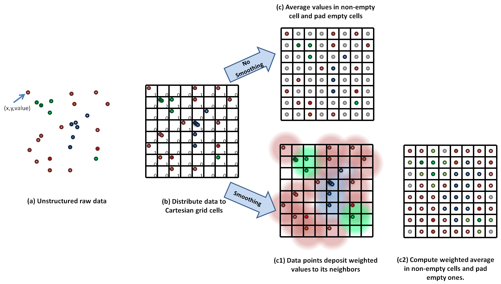
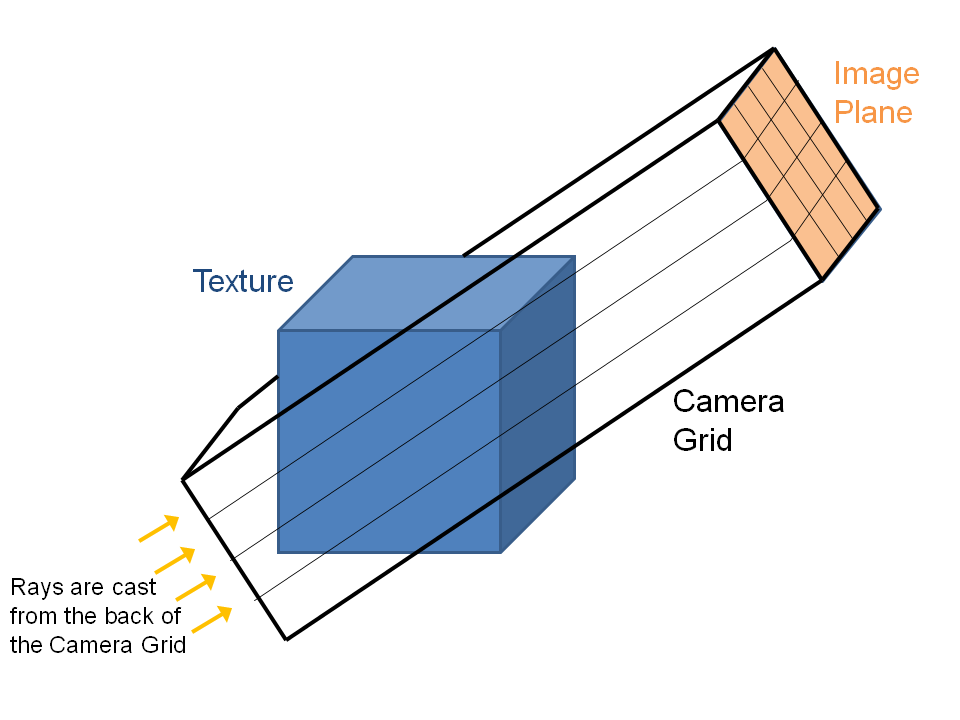
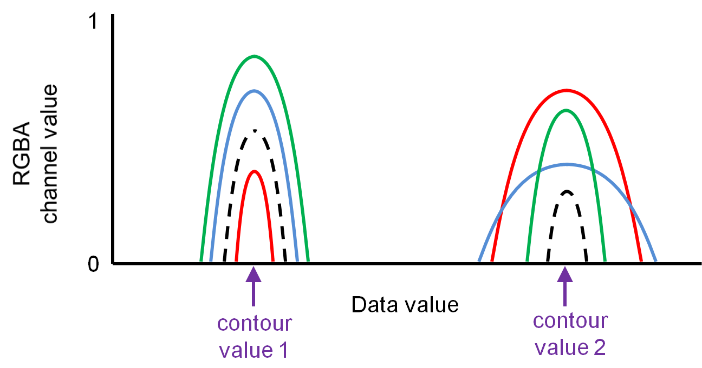

Algorithm
Gridding the Data
The data points (structured or unstructured) are first binned into a fine Cartesian grid. To do this safely (avoid race conditions) on a GPU, we use the 'atomicAdd' function. The values in cell in the Cartesian grid are averaged, and cells without values are padded by the minimum value in the data. An optional smoothing may be applied to distribute the value of one cell to its neighbors, weighted by a smoothing kernel. This is useful if the original data set has some regions with sparse sampling of the scalar field that is being plotted (which can be the case in adaptive mesh refinement (AMR) codes). The smoothing kernel weight as a function of distance from the center bin, given smoothing length, is given by:
$$ w(r) = 0.5 / N_{\rm smooth} / r. $$
Our binning and smoothing kernel is included below. The averaging of each kernel by weights takes place subsequently in another kernel:
__global__ void bindata_kernel(float* x, float* y, float* z, float* data, int Ndata, \
float* bin_counts, float* bin_values, int nbins_x, int nbins_y, int nbins_z, int Niterations, int Nthreads, int Nsmooth){
for (int iteration = 0; iteration < Niterations; ++iteration) {
int gid = blockIdx.x*blockDim.x + threadIdx.x + iteration * Nthreads;
int binind;
float weight;
if (gid < Ndata){
int xbinind = (int)floor(x[gid] + 0.5);
int ybinind = (int)floor(y[gid] + 0.5);
int zbinind = (int)floor(z[gid] + 0.5);
//int binind = zbinind*(nbins_x*nbins_y) + ybinind*nbins_x + xbinind;
for( int i = -Nsmooth; i < Nsmooth + 1; i++) {
for( int j = -Nsmooth; j < Nsmooth + 1; j++) {
for( int k = -Nsmooth; k < Nsmooth + 1; k++) {
binind = (xbinind+i)*(nbins_z*nbins_y) + (ybinind+j)*nbins_z + (zbinind+k);
if (i == 0 && j == 0 && k== 0)
weight = 1;
else
weight = 0.5 / Nsmooth / sqrt((float) (i * i + j * j + k * k));
if (binind < nbins_x*nbins_y*nbins_z) {
atomicAdd(&bin_counts[binind], weight);
atomicAdd(&bin_values[binind], data[gid]*weight);
}}}}}}}
Making a Texture
The Cartesian gridded data is then bound to a texture on the GPU. The hardware architecture of GPUs allows to very inexpensive texture lookups (including automatic trilinear interpolation at arbitrary query points), which is essential for rapid raycasting.
Calculating Camera Grid
A fine Cartesian grid is constructed to be oriented with the image plane/camera position. This step is again done on the GPU. This fine Cartesian grid, called the "Camera Grid'' is a 3D array of points which we will use in the next step to query the texture data. In the following raycasting step, rays are shot from the back of the camera grid to the image plane. The geometry is illustrated below.

__global__ void camera_grid_kernel(float* rot, float* x, float* y, float* z, \
int nx, int ny, int nz, int ntot, \
int grid_nx, int grid_ny, int grid_nz, \
float cam2tex_x, float cam2tex_y, float cam2tex_z, \
int image_y, int image_z, \
float shift_x, float shift_y, float shift_z,\
float box_x, float box_y, float box_z,\
int Niterations, int Nthreads )
{
float r00 = rot[0];
float r01 = rot[1];
float r02 = rot[2];
float r10 = rot[3];
float r11 = rot[4];
float r12 = rot[5];
float r20 = rot[6];
float r21 = rot[7];
float r22 = rot[8];
float xgrid, ygrid, zgrid;
for (int iteration = 0; iteration < Niterations; ++iteration)
{
int gid = blockIdx.x*blockDim.x + threadIdx.x + iteration * Nthreads;
if (gid < ntot) {
xgrid = ((float)(gid/(ny*nz))) * cam2tex_x - nx*cam2tex_x + shift_x*(grid_nx - 2) / box_x;
ygrid = ((float)((gid/nz) % ny)) * cam2tex_y - 0.5*image_y*cam2tex_y + shift_y*(grid_ny - 2) / box_y;
zgrid = ((float)(gid%nz)) * cam2tex_z - 0.5*image_z*cam2tex_z + shift_z*(grid_nz - 2) / box_z;
x[gid] = r00*xgrid + r01*ygrid + r02*zgrid + 0.5*(grid_nx - 2);
y[gid] = r10*xgrid + r11*ygrid + r12*zgrid + 0.5*(grid_ny - 2);
z[gid] = r20*xgrid + r21*ygrid + r22*zgrid + 0.5*(grid_nz - 2);
}
}
}
Interpolation
We look up the texture values at each of the points in the camera grid. This can be done for free using the hardware-accelerated texture lookup, which returns trilinearly interpolated values for arbitrary query points. The kernel is very simple:
texture data_tex;
__global__ void interp_texture_kernel(float *dest, float* sample_x, float* sample_y, float* sample_z, int Nsample) {
int gid = blockIdx.x * blockDim.x * blockDim.y * blockDim.z
+ threadIdx.z * blockDim.x * blockDim.y
+ threadIdx.y * blockDim.x + threadIdx.x;
if (gid < Nsample)
dest[gid] = tex3D(data_tex, sample_x[gid], sample_y[gid], sample_z[gid]);
}
However, we can obtain sharper-quality imaging if we use a higher order reconstruction such as a cubic-spline. In the naive implementation, which requires a stencil size of 64. However, efficient GPU implementations exist which mimize the number of texture lookups by using trilinearly interpolated texture lookups. Ruijters et al. (2009) express a cubic-spline texture lookup in terms of the appropriately weighted average of 8 trilinearly interpolated texture lookups.
Cubic-spline lookups provide much smoother quality images than trilinear interpolation, and can be implemented in an inexpensive way by averaging 8 trilinear lookups.
Credit: Ruijters et al. (2009)The figure illustrates cubis-spline in 1-dimension. The texture values \(c_i\) are at the centers of the texture cells, and are multiplied by weights determined by B-spline basis function, whose equation is shown.
Credit: Ruijters et al. (2009)Our cubic-spline kernel is provided below.
texture data_tex;
__global__ void cubic_spline_interp_texture_kernel(float *dest, float* sample_x, float* sample_y, float* sample_z, int Nsample, int Niterations, int Nthreads) {
for (int iteration = 0; iteration < Niterations; ++iteration) {
int gid = blockIdx.x * blockDim.x * blockDim.y * blockDim.z + threadIdx.z * blockDim.x * blockDim.y + threadIdx.y * blockDim.x + threadIdx.x + iteration * Nthreads;
if (gid < Nsample) {
float x = sample_x[gid];
float y = sample_y[gid];
float z = sample_z[gid];
// shift coordinates by -0.5
float3 coord_grid = make_float3(x-0.5, y-0.5, z-0.5);
float3 index = make_float3(floor(coord_grid.x), floor(coord_grid.y), floor(coord_grid.z));
float3 fraction = coord_grid - index;
float3 one_frac = make_float3(1.0-fraction.x, 1.0-fraction.y, 1.0-fraction.z);
float3 one_frac2 = one_frac * one_frac;
float3 fraction2 = fraction * fraction;
float3 w0 = make_float3(1.0/6.0*one_frac2.x*one_frac.x, 1.0/6.0*one_frac2.y*one_frac.y, 1.0/6.0*one_frac2.z*one_frac.z);
float3 w1 = make_float3(2.0/3.0-0.5*fraction2.x*(2.0-fraction.x), 2.0/3.0-0.5*fraction2.y*(2.0-fraction.y), 2.0/3.0-0.5*fraction2.z*(2.0-fraction.z));
float3 w2 = make_float3(2.0/3.0-0.5*one_frac2.x*(2.0-one_frac.x), 2.0/3.0-0.5*one_frac2.y*(2.0-one_frac.y),2.0/3.0-0.5*one_frac2.z*(2.0-one_frac.z));
float3 w3 = make_float3(1.0/6.0*fraction2.x*fraction.x, 1.0/6.0*fraction2.y*fraction.y, 1.0/6.0*fraction2.z*fraction.z);
float3 g0 = w0 + w1;
float3 g1 = w2 + w3;
// h0 = w1/g0 - 1, shift back by 0.5
float3 h0 = make_float3((w1/g0).x-0.5+index.x, (w1/g0).y-0.5+index.y, (w1/g0).z-0.5+index.z);
float3 h1 = make_float3((w3/g1).x+1.5+index.x, (w3/g1).y+1.5+index.y, (w3/g1).z+1.5+index.z);
// fetch the 8 linear interpolations
float tex000 = tex3D(data_tex, h0.x, h0.y, h0.z);
float tex001 = tex3D(data_tex, h0.x, h0.y, h1.z);
float tex010 = tex3D(data_tex, h0.x, h1.y, h0.z);
float tex011 = tex3D(data_tex, h0.x, h1.y, h1.z);
float tex100 = tex3D(data_tex, h1.x, h0.y, h0.z);
float tex101 = tex3D(data_tex, h1.x, h0.y, h1.z);
float tex110 = tex3D(data_tex, h1.x, h1.y, h0.z);
float tex111 = tex3D(data_tex, h1.x, h1.y, h1.z);
// weigh along the z-direction
tex000 = lerp(tex001, tex000, g0.z);
tex010 = lerp(tex011, tex010, g0.z);
tex100 = lerp(tex101, tex100, g0.z);
tex110 = lerp(tex111, tex110, g0.z);
// weigh along the y-direction
tex000 = lerp(tex010, tex000, g0.y);
tex100 = lerp(tex110, tex100, g0.y);
// weigh along the x-direction
dest[gid] = lerp(tex100, tex000, g0.x);
}
}
}
Transfer Function
The transfer function is a user defined function that is designed to pick out certain features of the data. It specifies the RGB values and opacity A that corresponds to a given data value. We implement multi-Gaussian and linear transfer functions and cast them as a texture on the GPU for quick lookup. An example transfer function that selects features near two data values is shown below.

Raycasting
The raycasting that produces the final image can be performed very simply after the data is interpolated onto the Cartesian Camer Grid. A ray is cast from the back of the Camera grid with an initial RGB value of (0,0,0). It updates its RGB value until it reaches a pixel the image plane, which will give us the RGB value to use in the construction of the final 2D image. The RGB values as the ray progresses by one cell is updated for each of the three channels (C) by $$ C \leftarrow A_i C_i + (1-A_i)C $$ where \(A_i\) and \(C_i\) are the transparency/color channel value of the new cell the ray entered, obtained by a transfer function lookup. The raycasting kernel is provided below.
__global__ void raycast_kernel(float* data, int ray_length, float min, float max, float* image_r, float* image_g, float* image_b, int N_pix) {
int gid = blockIdx.x*blockDim.x + threadIdx.x;
int nbins = 256;
float r, g, b, a;
if (gid < N_pix){
image_r[gid]=0;
image_g[gid]=0;
image_b[gid]=0;
for (int k = 0; k < ray_length; k++){
float bin_q = (nbins-1)*(data[gid + k * N_pix]-min)/(max-min);
float4 texval = tex1Dfetch(transferfunc_tex, bin_q);
r = texval.x;
g = texval.y;
b = texval.z;
a = texval.w;
image_r[gid] = a*r + (1-a)*image_r[gid];
image_g[gid] = a*g + (1-a)*image_g[gid];
image_b[gid] = a*b + (1-a)*image_b[gid];
}
}
}
Optimizations
Texture Memory
We use texture memory for both the 3D data and the transfer function to make use of hardware architecture supported lookups, meaning that we can query any point using linear/trilinear interpolation for free. Additionally, we implement a very efficient cubic-spline interpolator using the weighted mean of 8 texture lookups rather than using a full 64 point stencil.
Combining kernels -- Two implementations of our GPU code
Our code has two implementations of raycasting.